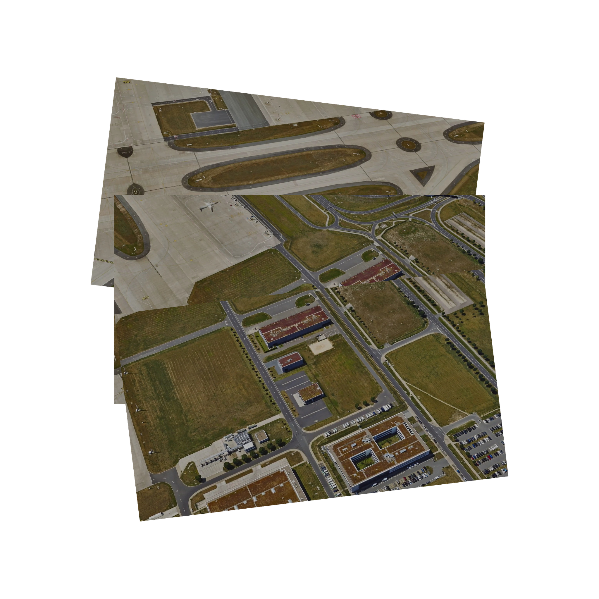
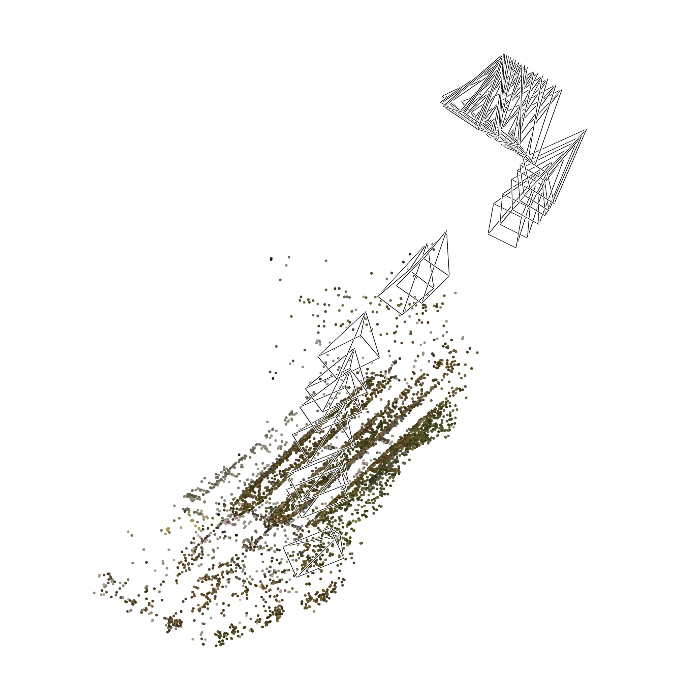
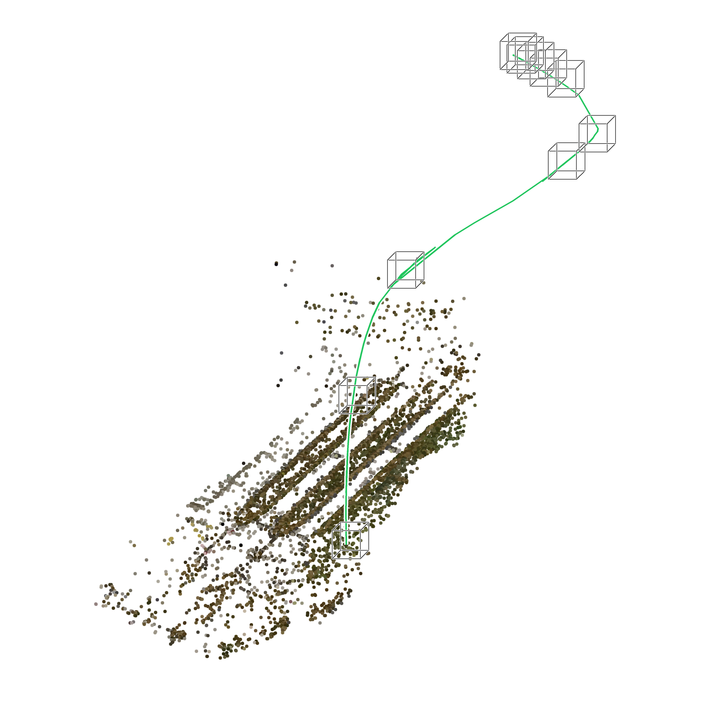
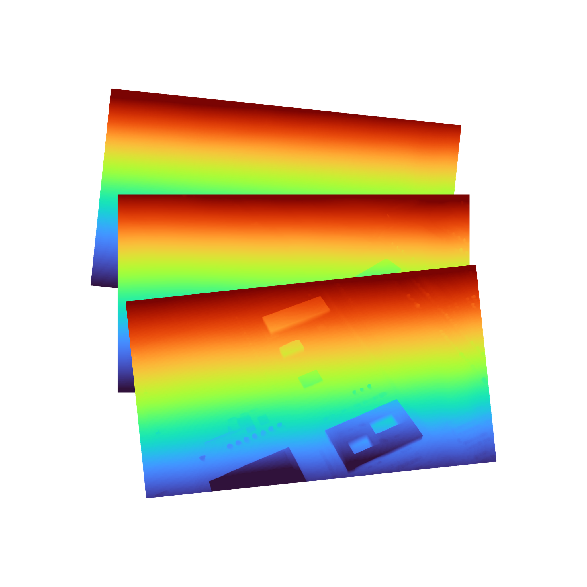
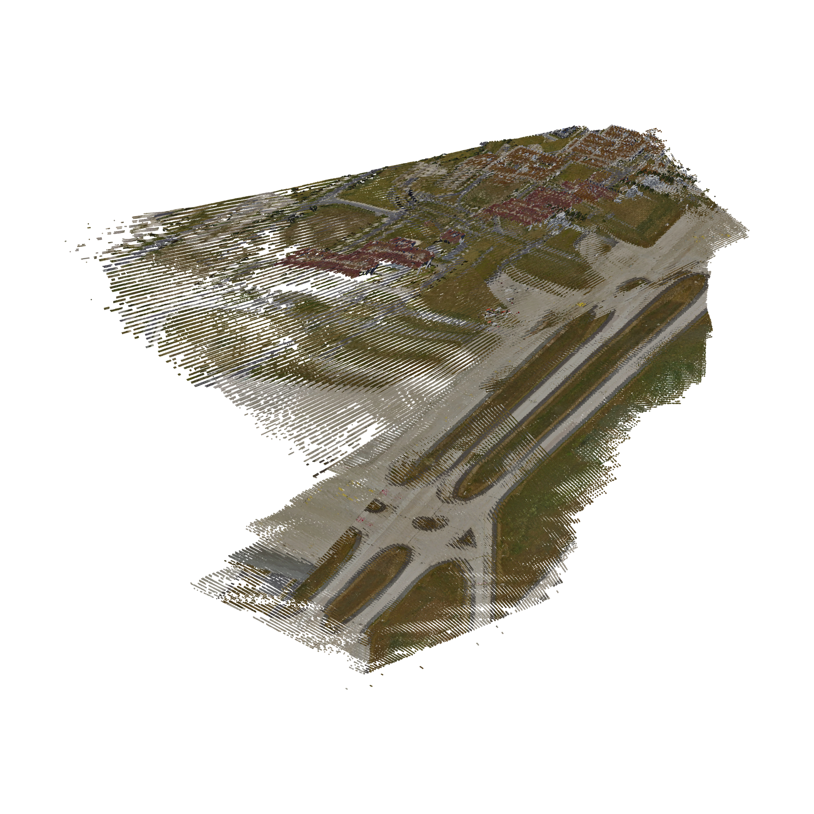
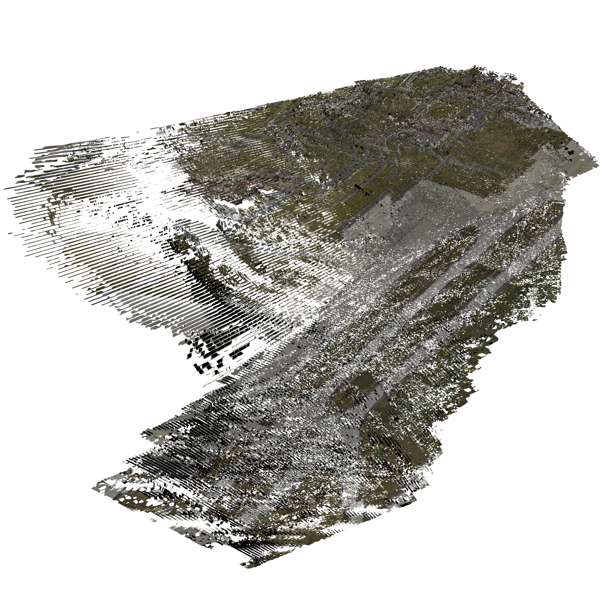
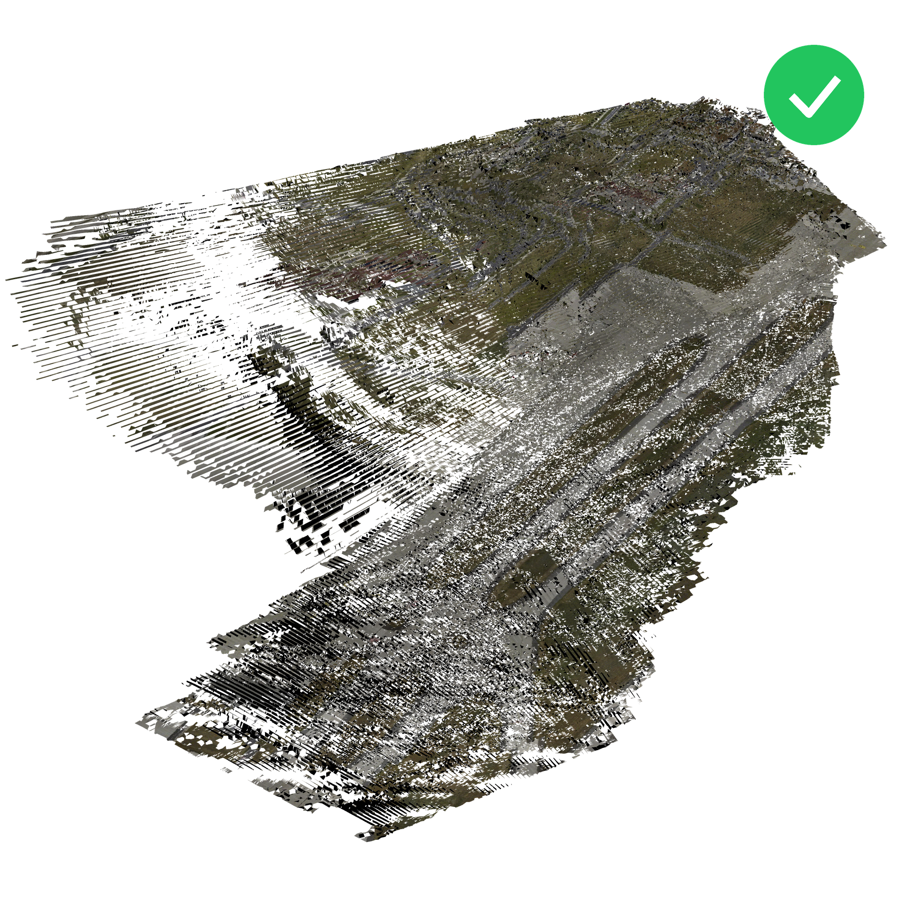

STRATA pipeline stages — airport1_test_99ee3c
Real artifacts from this run, 2048×2048 RGBA, transparent background.

Raw Drone Dataframes/*.jpg (extracted from video.mp4)

Sparse Point Cloud & Camera Posessparse_model.ply + poses.json

Filtered Sparse Cloud with Aligned Trajectorysparse_model_consistent.ply + poses.json

Per-view Depth Mapsdepth/*.npy

Dense Point Clouddense/dense_model.ply

Textured 3D Meshmesh/mesh_viewer.glb (baked atlas)

Validated 3D Modelmesh/mesh_viewer.glb + quality_report.json